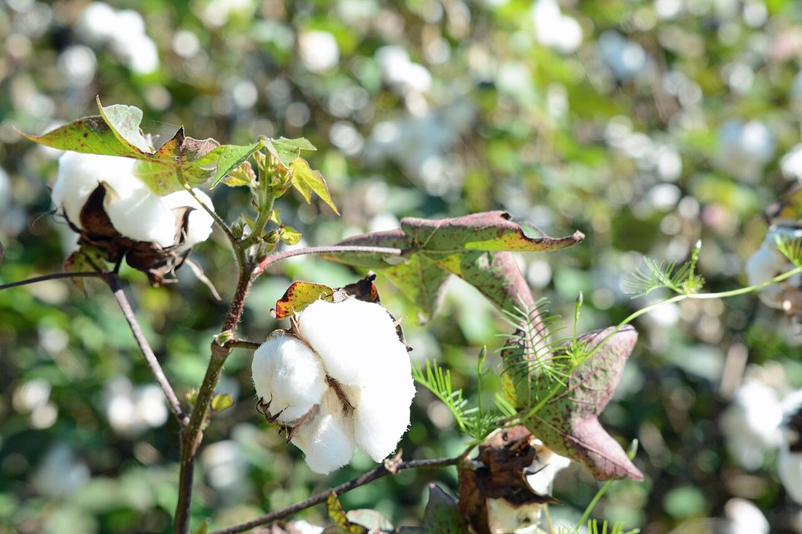
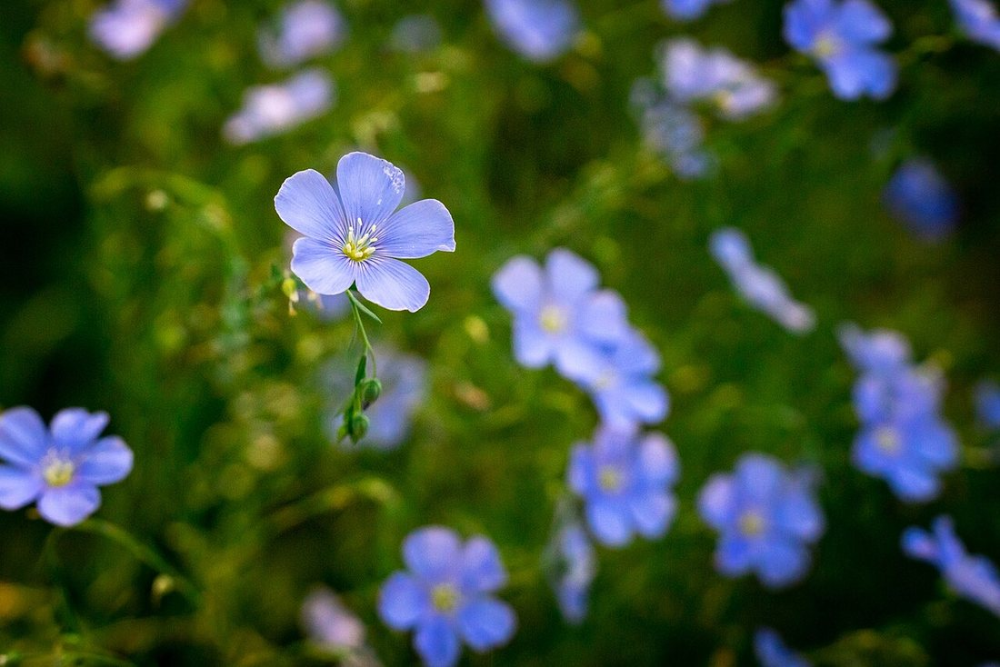
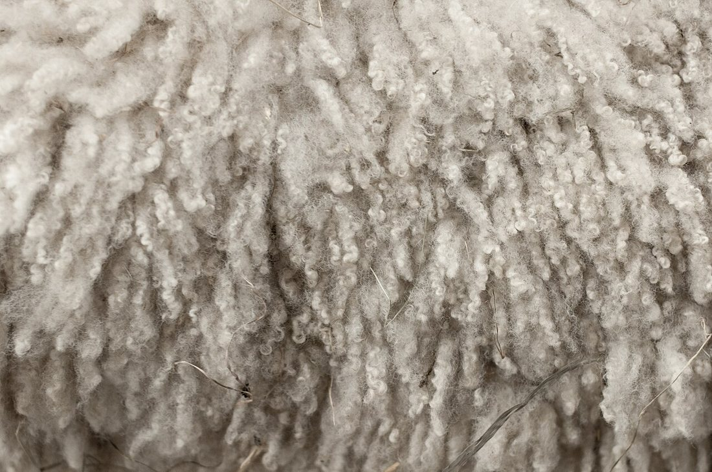
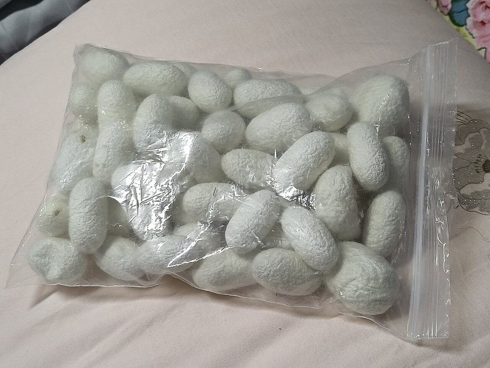
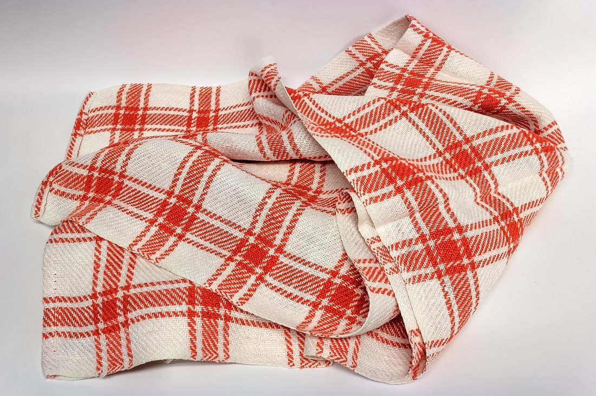
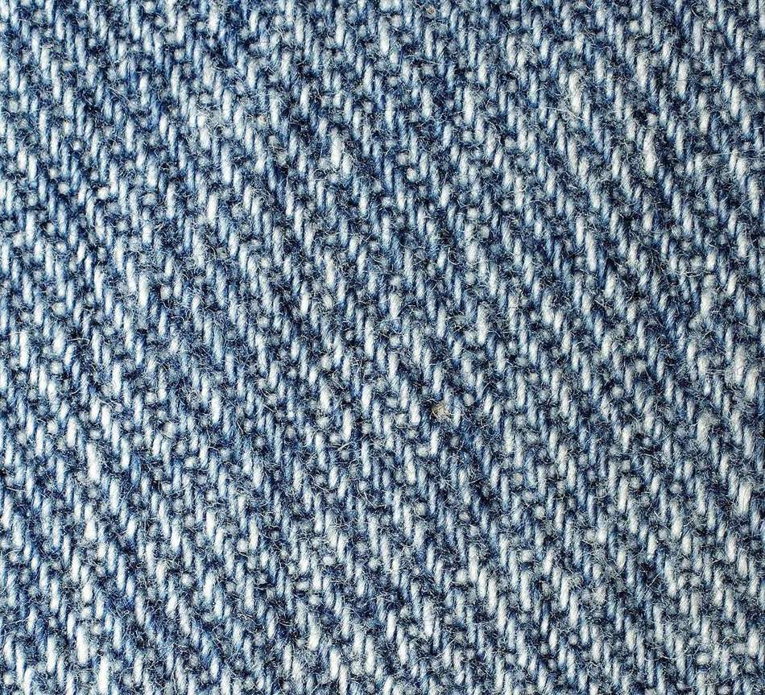
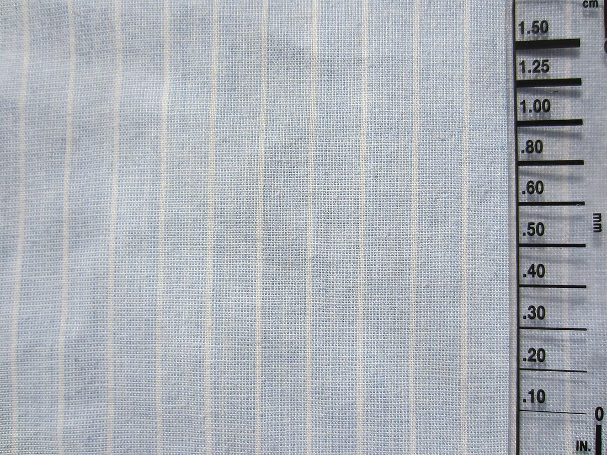

Көркем еңбек · Тоқыма материалтануы Art & Craft · Textile Materials Художественный труд · Текстильное материаловедение
🧵 Тоқыма материалтануы: талшықтар мен маталар
🧵 Textile Materials: Fibres & Fabrics
🧵 Текстильное материаловедение: волокна и ткани
Мата неден тоқылады, талшықтардың қасиеттерін неге білу керек. What fabric is woven from, and why we must know the properties of fibres. Из чего ткут ткань и зачем знать свойства волокон.
Талшық — матаның ең кіші бөлшегі, жіңішке әрі ұзын жіп тәрізді зат. Талшықтан иіру арқылы жіп алады, ал жіптерді тоқу немесе трикотаждау арқылы мата жасайды. Сондықтан кез келген матаның мінезі — оның жылылығы, беріктігі, тершеңдігі, мыжылуы мен күтімі — ең алдымен талшықтың табиғатына байланысты. Материалтану дәл осы талшықтар мен маталардың қасиеттерін зерттейді. Бұйымға дұрыс мата таңдау, оны дұрыс кесу, тігу және жуу үшін шебер талшықтардың қасиеттерін білуі қажет: мақта көйлек жазда салқын ұстайды, жүн орамал қыста жылытады, ал синтетика тез кебеді бірақ ыстық үтікті көтермейді. A fibre is the smallest part of a fabric — a thin, long thread-like material. From fibres we spin yarn, and by weaving or knitting yarns we make fabric. That is why the character of any cloth — its warmth, strength, breathability, creasing and care — depends first of all on the nature of the fibre. Materials science studies exactly these properties of fibres and fabrics. To choose the right cloth for an item and to cut, sew and wash it correctly, a craftsperson must know the properties of fibres: a cotton shirt keeps you cool in summer, a woollen shawl keeps you warm in winter, while synthetics dry quickly but cannot stand a hot iron. Волокно — это мельчайшая часть ткани, тонкое и длинное нитевидное вещество. Из волокон прядут нить (пряжу), а из нитей ткут или вяжут ткань. Поэтому характер любой ткани — её тепло, прочность, способность «дышать», сминаемость и уход — прежде всего зависит от природы волокна. Материаловедение изучает именно эти свойства волокон и тканей. Чтобы выбрать для изделия правильную ткань, верно её раскроить, сшить и постирать, мастерица должна знать свойства волокон: хлопковая рубашка холодит в жару, шерстяной платок греет зимой, а синтетика быстро сохнет, но не терпит горячего утюга.
Талшықтардың жіктелуі Classification of Fibres Классификация волокон
Барлық талшықтар екі үлкен топқа бөлінеді: табиғи (өсімдік пен жануардан) және химиялық (зауытта жасалған). 🔍 Суретті үлкейту үшін басыңыз. All fibres fall into two large groups: natural (from plants and animals) and man-made / chemical (produced in a factory). 🔍 Tap a photo to enlarge it. Все волокна делятся на две большие группы: натуральные (из растений и животных) и химические (созданные на заводе). 🔍 Нажмите на фото, чтобы увеличить.
Табиғи өсімдік талшықтарыNatural plant fibresНатуральные растительные волокна

МақтаCottonХлопок
Жұмсақ, гигиеналық, ауа мен ылғалды жақсы өткізеді, жуылуға төзімді. Бірақ оңай мыжылады және сәл отырады. Маталары: ситец, бязь, фланель, джинса.Soft, hygienic, lets air and moisture through and washes well. But it creases easily and shrinks a little. Fabrics: calico, cambric, flannel, denim.Мягкий, гигиеничный, хорошо пропускает воздух и влагу, выдерживает стирку. Но легко мнётся и немного садится. Ткани: ситец, бязь, фланель, джинса.

Зығыр (лён)Flax (linen)Лён
Мақтадан гөрі берік әрі салқын, жылтыр, ылғалды тез сіңіріп тез құрғатады. Кемшілігі — қатты мыжылады. Маталары: зығыр кенебі, дамаска.Stronger and cooler than cotton, slightly glossy, absorbs and releases moisture fast. Its drawback — it creases badly. Fabrics: linen canvas, damask.Прочнее и прохладнее хлопка, с лёгким блеском, быстро впитывает и отдаёт влагу. Недостаток — сильно мнётся. Ткани: льняное полотно, дамаст.
Табиғи жануар талшықтарыNatural animal fibresНатуральные животные волокна

ЖүнWoolШерсть
Өте жылы, серпімді, аз мыжылады, ылғалды баяу сіңіреді. Кемшілігі — ыстық суда отырып, тоқылып қалады («піседі»); күйе сасиды. Маталары: драп, бостон, шұға, фетр.Very warm, elastic, hardly creases, absorbs moisture slowly. Its drawback — in hot water it shrinks and felts; it smells of burnt hair. Fabrics: drape, boston, cloth, felt.Очень тёплая, упругая, мало мнётся, медленно впитывает влагу. Недостаток — в горячей воде садится и сваливается («сваливается в войлок»); пахнет палёным. Ткани: драп, бостон, сукно, фетр.

ЖібекSilkШёлк
Жұқа, жеңіл, әсем жылтыр, берік әрі салқын ұстайды. Кемшілігі — қымбат, күнге өңі оңады, нәзік күтім тілейді. Маталары: атлас, шифон, креп, шантунг.Thin, light, with a beautiful sheen, strong and cooling. Its drawback — expensive, fades in the sun, needs gentle care. Fabrics: satin, chiffon, crepe, shantung.Тонкий, лёгкий, с красивым блеском, прочный и холодит. Недостаток — дорогой, выгорает на солнце, требует бережного ухода. Ткани: атлас, шифон, креп, шантунг.
Химиялық талшықтарMan-made (chemical) fibresХимические волокна
Зауытта жасалады және екіге бөлінеді: жасанды — табиғи шикізаттан (ағаш целлюлозасынан) алынады, мысалы вискоза; синтетикалық — мұнай мен газдан химиялық жолмен жасалады, мысалы полиэстер, нейлон (капрон). Made in a factory and split into two kinds: artificial — made from natural raw material (wood cellulose), e.g. viscose; synthetic — made chemically from oil and gas, e.g. polyester, nylon. Создаются на заводе и делятся на два вида: искусственные — получают из природного сырья (древесной целлюлозы), например вискоза; синтетические — делают химически из нефти и газа, например полиэстер, нейлон (капрон).
ВискозаViscoseВискоза
Жібекке ұқсайды: жұмсақ, жылтыр, тершең. Бірақ суланғанда әлсірейді, оңай мыжылады. Көйлек, астарлық матаға кетеді.Resembles silk: soft, glossy, breathable. But it weakens when wet and creases easily. Used for dresses and linings.Похожа на шёлк: мягкая, блестящая, дышит. Но во влажном виде слабеет и легко мнётся. Идёт на платья и подкладку.
ПолиэстерPolyesterПолиэстер
Өте берік, мыжылмайды, пішінін сақтайды, тез кебеді, арзан. Кемшілігі — тершеңдігі нашар, ыстық үтікті көтермейді, статикалық электр жинайды.Very strong, crease-free, keeps its shape, dries fast, cheap. Its drawback — poor breathability, cannot stand a hot iron, builds up static.Очень прочный, не мнётся, держит форму, быстро сохнет, дешёвый. Недостаток — плохо «дышит», не терпит горячего утюга, накапливает статику.
Нейлон (капрон)NylonНейлон (капрон)
Аса берік, жеңіл, серпімді, тозуға төзімді. Кемшілігі — ауа өткізбейді, күнге өңі оңады, жоғары температурадан балқиды. Шұлық, спорттық киім.Extremely strong, light, elastic, wear-resistant. Its drawback — does not breathe, fades in the sun, melts at high heat. Tights, sportswear.Очень прочный, лёгкий, упругий, износостойкий. Недостаток — не пропускает воздух, выгорает на солнце, плавится при высокой температуре. Колготки, спортивная одежда.
Талшықтардың қасиеттерін салыстыру Comparing the Properties of Fibres Сравнение свойств волокон
Талшық → шығу тегі → қасиеттері → күтімі. Fibre → origin → properties → care. Волокно → происхождение → свойства → уход.
| Волокно | Происхождение | Свойства | Уход |
|---|---|---|---|
| Хлопок | Растительное — коробочка хлопчатника | Мягкий, дышит, гигиеничный, прочный во влажном виде; мнётся, садится | Стирка до 60°C, утюг горячий, сушка обычная |
| Лён | Растительное — стебель льна | Прочный, холодит, с блеском, быстро сохнет; сильно мнётся | Стирка тёплая, утюг очень горячий, лучше влажным |
| Шерсть | Животное — руно овцы, козы, верблюда | Тёплая, упругая, мало мнётся; садится и сваливается, боится моли | Ручная стирка в прохладной воде, утюг тёплый через ткань, не тереть |
| Шёлк | Животное — нить кокона шелкопряда | Лёгкий, блестящий, прочный, холодит; дорогой, выгорает | Деликатная стирка, утюг тёплый с изнанки, без отжима |
| Вискоза | Искусственное — древесная целлюлоза | Мягкая, блестящая, дышит; слабеет мокрой, мнётся | Бережная стирка, отжим лёгкий, утюг тёплый |
| Полиэстер | Синтетическое — нефть | Прочный, не мнётся, держит форму, быстро сохнет; плохо дышит, статика | Стирка тёплая, утюг тёплый/нельзя, сохнет сам |
| Нейлон | Синтетическое — нефть и газ | Очень прочный, лёгкий, упругий; не дышит, плавится, выгорает | Стирка прохладная, без горячего утюга, сушка в тени |
| Талшық | Шығу тегі | Қасиеттері | Күтімі |
|---|---|---|---|
| Мақта | Өсімдік — мақта көсегесі | Жұмсақ, тершең, гигиеналық, су тигенде берік; мыжылады, отырады | 60°C-қа дейін жуу, үтік ыстық, кәдімгідей кептіру |
| Зығыр | Өсімдік — зығыр сабағы | Берік, салқындатады, жылтыр, тез құрғайды; қатты мыжылады | Жылы суда жуу, үтік өте ыстық, дымқыл күйде үтіктеген жөн |
| Жүн | Жануар — қой, ешкі, түйе жүні | Жылы, серпімді, аз мыжылады; отырады әрі тоқылады, күйе жейді | Салқын суда қолмен жуу, мата арқылы жылы үтік, ысқыламау |
| Жібек | Жануар — жібек көбелегінің пілләсі | Жеңіл, жылтыр, берік, салқын; қымбат, өңі оңады | Нәзік жуу, ішкі жағынан жылы үтік, сықпай кептіру |
| Вискоза | Жасанды — ағаш целлюлозасы | Жұмсақ, жылтыр, тершең; су тигенде әлсірейді, мыжылады | Абайлап жуу, жеңіл сығу, жылы үтік |
| Полиэстер | Синтетика — мұнай | Берік, мыжылмайды, пішін сақтайды, тез кебеді; нашар тершең, статика | Жылы жуу, үтік жылы/болмайды, өзі кебеді |
| Нейлон | Синтетика — мұнай мен газ | Өте берік, жеңіл, серпімді; ауа өткізбейді, балқиды, өңі оңады | Салқын жуу, ыстық үтіксіз, көлеңкеде кептіру |
| Fibre | Origin | Properties | Care |
|---|---|---|---|
| Cotton | Plant — cotton boll | Soft, breathable, hygienic, strong when wet; creases, shrinks | Wash up to 60°C, hot iron, normal drying |
| Linen | Plant — flax stem | Strong, cooling, glossy, dries fast; creases badly | Warm wash, very hot iron, best ironed damp |
| Wool | Animal — fleece of sheep, goat, camel | Warm, elastic, hardly creases; shrinks and felts, fears moths | Hand-wash cool, warm iron through cloth, do not rub |
| Silk | Animal — thread of the silkworm cocoon | Light, glossy, strong, cooling; expensive, fades | Delicate wash, warm iron on reverse, no wringing |
| Viscose | Artificial — wood cellulose | Soft, glossy, breathable; weak when wet, creases | Gentle wash, light spin, warm iron |
| Polyester | Synthetic — oil | Strong, crease-free, keeps shape, dries fast; poor breathing, static | Warm wash, warm/no iron, dries by itself |
| Nylon | Synthetic — oil and gas | Very strong, light, elastic; does not breathe, melts, fades | Cool wash, no hot iron, dry in shade |
Талшықтар мен маталар — нақты суреттер Fibres & Fabrics — Real Photos Волокна и ткани — реальные фото
🔍 Үлкейту үшін суретті басыңыз. 🔍 Tap a photo to enlarge it. 🔍 Нажмите на фото, чтобы увеличить.


Талшықты қалай тануға болады How to Identify a Fibre Как определить волокно
Үйде екі қарапайым сынақ бар: ұстап көру және (ересектің көзінше) жіптің ұшын жағу. At home there are two simple tests: feeling the fabric and (with an adult) burning the end of a thread. Дома есть две простые пробы: на ощупь и (со взрослым) проба на сжигание кончика нити.

🔥 Жағу сынағы: табиғиBurn test: naturalПроба огнём: натуральные
Мақта, зығыр тез жанып, қағаз иісін шығарады, жұмсақ сұр күл қалады. Жүн, жібек баяу жанып, шар тәрізді қара түйірге айналады және күйген түк/шаш иісін береді — оны саусақпен үгітуге болады.Cotton, linen burn quickly with a smell of paper and leave soft grey ash. Wool, silk burn slowly, curl into a black bead and smell of burnt hair — the bead crushes between fingers.Хлопок, лён горят быстро, пахнут жжёной бумагой, оставляют мягкий серый пепел. Шерсть, шёлк горят медленно, скатываются в чёрный шарик и пахнут палёным волосом — шарик растирается пальцами.
⚗️ Жағу сынағы: синтетикаBurn test: syntheticПроба огнём: синтетика
Полиэстер, нейлон жанбай, балқиды және тамшылайды, өткір химиялық/пластик иісін береді, ұшында қатты қара түйір қалады. Вискоза мақтаға ұқсас (қағаз иісі), өйткені ол целлюлозадан. Сынақты тек ересектің көзінше жасаңыз!Polyester, nylon do not really burn — they melt and drip, smell sharp and chemical/plastic, and leave a hard dark bead. Viscose behaves like cotton (paper smell) because it is made of cellulose. Do this test only with an adult!Полиэстер, нейлон не горят, а плавятся и капают, пахнут резко (химия/пластик), оставляют твёрдый тёмный шарик. Вискоза ведёт себя как хлопок (запах бумаги), ведь она из целлюлозы. Делайте пробу только со взрослыми!
💬 Қорытынды 💬 In a nutshell 💬 Главное
Талшық матаның мінезін айқындайды: табиғи талшықтар (мақта, зығыр, жүн, жібек) тершең әрі денеге жайлы, ал химиялық талшықтар (вискоза, полиэстер, нейлон) берік, арзан әрі күтімі оңай. Талшықтың шығу тегі мен қасиеттерін білген шебер бұйымға дұрыс мата таңдап, оны дұрыс жуып, үтіктеп, ұзақ сақтай алады. The fibre defines the character of the cloth: natural fibres (cotton, linen, wool, silk) breathe and feel pleasant on the body, while man-made fibres (viscose, polyester, nylon) are strong, cheap and easy to care for. A craftsperson who knows the origin and properties of a fibre can choose the right cloth for an item, wash and iron it correctly and make it last. Волокно определяет характер ткани: натуральные волокна (хлопок, лён, шерсть, шёлк) «дышат» и приятны телу, а химические (вискоза, полиэстер, нейлон) прочны, дёшевы и просты в уходе. Мастерица, знающая происхождение и свойства волокна, выберет для изделия правильную ткань, верно её постирает и погладит и продлит ей жизнь.